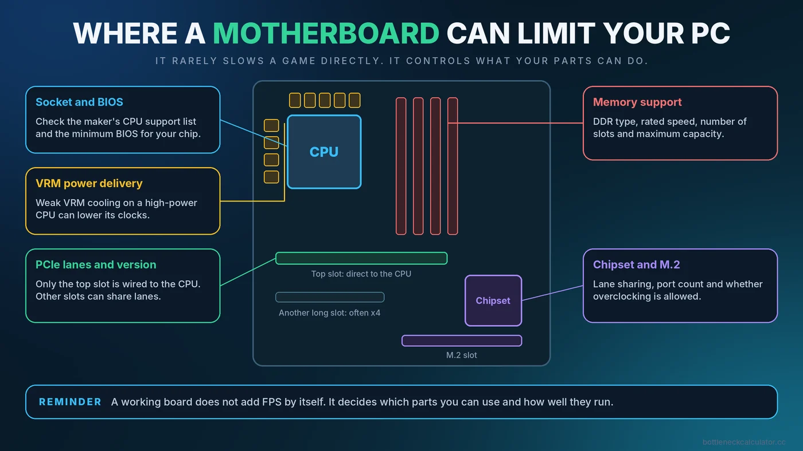

Can a Motherboard Bottleneck Your CPU, RAM or GPU? VRMs, Chipsets and BIOS Explained
A motherboard does not have a speed rating the way a CPU or graphics card does, so people often assume it cannot slow anything down. In practice it can, in a handful of specific ways. This guide covers the real limits, how to check whether yours is one of them, and how to avoid overspending on features you will never use.

Short Answer: Rarely a Speed Bottleneck, but It Can Limit Your Options
A working motherboard does not make a game run faster or slower by itself. What it does is decide which parts you can use and how well they run. A board can hold back a system if it cannot run your CPU at full speed, cannot support your RAM's rated speed, gives your graphics card too few lanes, or needs a BIOS update before it recognizes your processor. Most of these are easy to avoid once you know what to check.
Our guide to the different types of PC bottlenecks introduces motherboard limits briefly. This article goes deeper.
1. Socket, Chipset and BIOS Compatibility
The CPU socket decides which processors physically fit, and the chipset and BIOS decide which ones actually work. A board can have the right socket and still fail to start with a newer processor if its BIOS is too old.
- Check the CPU support list. Every board maker publishes a list of supported processors and the minimum BIOS version needed for each.
- Know the BIOS version. If a board ships with an older BIOS, you may need to update it before a newer CPU will boot. Many boards offer a flashback feature that updates the BIOS without a CPU installed, which is worth looking for when upgrading.
- Watch for generation limits. A board for an older generation of processors may not be able to run a newer one at all.
2. VRM and Power Delivery
The voltage regulator module (VRM) converts power for the CPU. A strong VRM with good cooling holds steady power under heavy load. A weak one can overheat, and protection features may then reduce the CPU's power and speed to stay safe. This matters most when you pair a high-power processor with an entry-level board, or when you run long sustained loads.
It is less of a worry for modest processors. A sensible approach is to match the board's tier to the processor's power use. If a CPU runs hot and loses clocks, check whether the cause is the CPU cooler or the board before blaming the chip. Our guide to thermal throttling vs a CPU bottleneck shows how to tell the difference.
3. Memory Support
- Memory type. A board supports DDR4 or DDR5, not both in the same slots. This is fixed when you buy.
- Maximum speed. Boards and processors list supported memory speeds, and rated speeds beyond that may need manual settings or may not be stable.
- Number of slots. Fewer slots limit your upgrade path, and filling all slots can lower the speed a board can hold.
- Capacity limits. Check the maximum total memory if you plan on 64GB or more.
If your memory runs below its rated speed, read how to enable XMP or EXPO and whether RAM speed affects FPS before assuming the board is at fault.
4. PCIe Lanes and Slot Wiring
Different boards give different numbers of PCIe lanes and different PCIe versions, and not every physical slot runs at full speed. A second long slot is often wired for fewer lanes, and an M.2 drive can share lanes with another slot. For a standard graphics card in the top slot, this rarely matters. It matters more for cards with narrow interfaces. Our guide on PCIe 3.0 vs 4.0 vs 5.0 explains when. A BIOS update can also add support for Resizable BAR (Smart Access Memory).
5. Chipset Features and Overclocking Support
Chipset tiers differ in features, such as how many fast ports and drives you can connect, and in whether they allow CPU overclocking. Some processors can be overclocked only on certain chipsets, while on other platforms most boards allow it. If you do not plan to overclock, paying for a higher chipset to get that feature gives you nothing. Check what the extra price actually buys you. To judge whether that feature matters for your games, see how much FPS overclocking really adds.
What a Motherboard Does Not Do
- It does not add FPS just because it is expensive.
- It does not make a slow CPU or GPU faster.
- Extra RGB, heat sinks and premium audio do not improve gaming performance.
- A newer chipset name does not automatically mean better gaming results.
How to Check Your Motherboard
- Identify the model. Press the Windows key, type System Information and open it. Look for BaseBoard Manufacturer and BaseBoard Product. You can also read the model printed on the board.
- Find the manufacturer's support page for that exact model. Look for the CPU support list, memory support list and BIOS downloads.
- Check your BIOS version in System Information or at the top of the BIOS screen, and compare it with the latest release notes.
- Watch temperatures and clocks under load. Use a monitoring tool to check CPU clocks and power. Some boards also expose VRM temperature sensors. A steady drop in CPU speed with high temperatures suggests a cooling or power-delivery limit.
- Check memory speed and channels in Task Manager or CPU-Z.
- Confirm the graphics card link with GPU-Z, as described in our PCIe guide.
Matching a Board to Your Build
| Situation | What to look for |
|---|---|
| Budget build with a modest CPU | A reliable entry-level board with the right socket and memory type is usually enough. |
| High-power CPU or long heavy loads | A board with strong VRM cooling and good reviews of sustained performance. |
| Planning a later CPU upgrade | A platform with a good upgrade path and current BIOS support. Check the maker's CPU list. |
| Fast memory and extra drives | A board with the slots, memory support and M.2 lanes you need. |
| Overclocking | A chipset and board that allow it, with good power delivery. |
Use our PC upgrade checklist and guide to building a balanced PC when you plan a new build or an upgrade, and our CPU and GPU pairing guide to choose the main components first.
Common Mistakes
- Buying a new CPU without checking whether the board's BIOS supports it.
- Pairing a very high-power processor with the cheapest board in the range.
- Installing two memory sticks in the wrong slots and losing dual channel.
- Paying for features you will not use, like extra drive slots or overclocking support.
- Updating the BIOS without reading the maker's instructions and risking an interrupted update.
Conclusion
A motherboard rarely slows a game directly, but it controls compatibility, memory support, power delivery and lane layout, and those can limit what your other parts achieve. Check the CPU and memory support lists, keep the BIOS current, match the board tier to the processor, and spend on features you will use. Then see how your CPU and GPU compare with the free Bottleneck Calculator.
Frequently Asked Questions
Can a cheap motherboard cause a bottleneck?
It can, mainly when a power-hungry CPU is paired with a board whose power delivery overheats and reduces CPU speed. For modest processors, a sensible entry-level board is usually fine.
Does the motherboard affect gaming FPS?
Not directly. It affects which CPU, memory and graphics card you can use and how well they run, but a working board does not add or remove FPS on its own.
How do I know if my motherboard supports a CPU?
Check the manufacturer's CPU support list for your exact board model, and note the minimum BIOS version required for that processor.
Do I need to update my BIOS before upgrading my CPU?
Sometimes. If a newer CPU needs a newer BIOS than the one installed, the system may not start. Check the support list, and look for a BIOS flashback feature.
Is an expensive motherboard worth it for gaming?
Only if you need its features, such as stronger power delivery for a high-power CPU, more drive slots or overclocking support. Otherwise the money usually delivers more performance in the CPU or graphics card.
Sources
Official documentation and tools referenced in this guide: